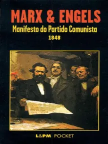

Marx & Angels

Manifesto do partido comunista
1848
Escrito há quase 200 anos, O manifesto comunista, de Karl Marx e Friedrich Engels, foi concebido excepcionalmente para comunicar as ideias seminais da organização política do proletariado a um público amplo e popular. A finalidade dos autores era aproximar a classe trabalhadora das teorias políticas que formariam as bases do comunismo na Europa. A empreitada resultou num texto claro e objetivo, que chegou aos quatro cantos do planeta e se tornou um dos principais acontecimentos políticos do mundo moderno e contemporâneo.
R$0,00